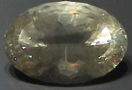

Calcite
| The varieties of calcite, CaCO3, are so numerous and so varied that an entire display case at the Smithsonian Museum of Natural History is devoted to just calcite. Calcite is the most abundant of the carbonate minerals. The sample shown at left is called cobaltian calcite. Pure calcite is colorless, but a few atoms of cobalt replacing some of the calcium atoms produces the pink tint. The sample is about 9x12 cm. All these samples are part of the gem and mineral exhibit at the Smithsonian Museum of Natural History. |
| This sample is described as calcite with cuprite inclusions. It is from New Cornelia open pit mine, Ajo, Arizona. It is about 6 cm across. |
|
| This 3.9 carat gem is from Spain.
| This 122.3 carat gem is from Chihuahua, Mexico.
|
The calcite gem above is 52.3 carats and is from Balmat, New York. At right is a 110.7 carat calcite gem from Africa. | |
| The large calcite gem at right is 1865 carats and is from Balmat, New York.This oval-cut calcite gem is about 8x6 cm. |
|
|
This faceted calcite ball is about 3.5x3.5 cm.
|
The red calcite gem above is 150.6 carats and the gem at right is 70.2 carats. They are from Baja California, Mexico.
|
|
This huge single crystal of calcite is about 30x45 cm and is from Iceberg claim, Dixon, New Mexico. It shows the characteristic calcite geometry and shows the large birefringence of calcite in the double image of the text placed behind it. |

|
Mindat: Calcite
|
Index |